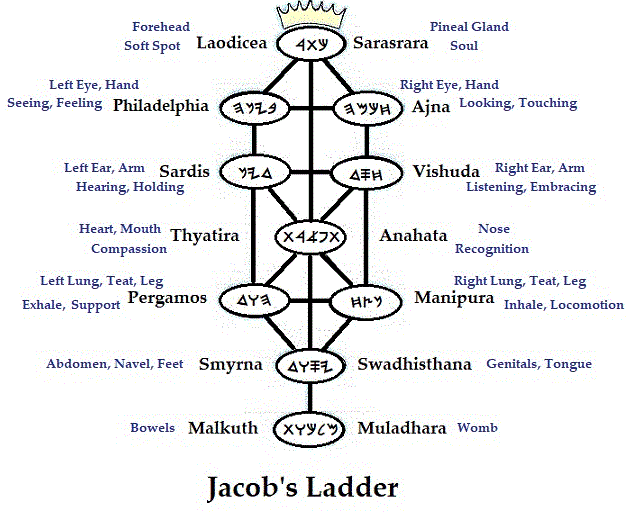
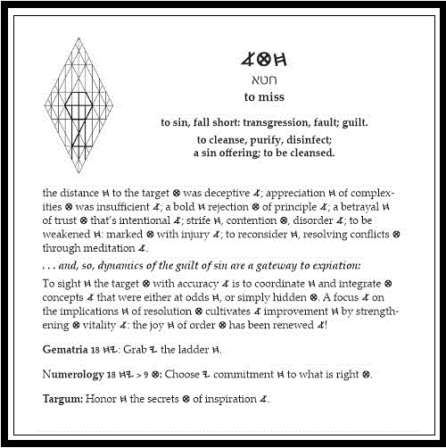

Once, in the labyrinth years before water baptism, I was performing Bhakti yoga, the yoga of religious devotion centered on a Master. My study was clean to my mind because I maintained that the man Jesus was the master yogi, and so he is (John 10:16; Matt. 8:11; Rom. 1:17); but at some point, I became more attracted to the event called yoga than I was to understanding the teachings of Rav Y'shúa. At that instant, what I later understood to be an angel appeared, saying, "You want the circle of light?! You've got it!"
I was literally knocked to the floor, instantly, by the appearance in the center of my forehead of a circle of light some three fingers in diameter. But something was wrong! The luminescent circle was distorted by thin, undulating dark lines moving unevenly across its face! I understood the vain temerity and humbly acknowledged the error of developing a preference for the mammon of righteousness above its holy Source: I had become covetous of godliness. The circle of light was, mercifully, removed and has yet to reappear. One day it will be shared by us all.
This third eye--the single eye of the parables of Y'shúa-- is the forehead seal of the perfected, the many-petaled Lotus (1 Cor. 9:19-25; John 1:4-5, 6:27). These words are-- even now, when the moment of my birth by physical death presses upon me-- are being allowed by grace under the power of the seal of promise, which is the earnest of spiritual rest in the Father's hand. Not yet perfected, I have nevertheless been granted access to the circle of Kether. I have partaken of its fruit at the hands of the Angel of the Presence. Wrapped in swaddling clothes in 1989, the year I began this writing, I was appointed to bring forth this work and should have done much better. May my imperfections serve hwhy.
Such as I! "If 'Paul' means 'Little,'" I lamented (I had been having my troubles with Shaul's writings), "let my name be called 'Very Little'!" "Minuscule," came the silent reply.
And, so, the struggle grew: Bob versus Bora, the unrighteousness of the one being defeated by the righteousness of God in the other, only to reappear, unexpectedly, in unanticipated permutations. Day by day I have learned by the littles: more by my failures than by my successes (2 Thess. 2:3). The right- and left-hand paths I once despaired of learning have been and are yet being opened to me (Is. 45:1): Bob was becoming as Cyrus; and Bora, as Zerubbabel-- but not without terror!
"Adam Kadmon!" I protested, out of earshot of the brother who was instructing me. "You know I have rid my house of all graven images" (I had actually only eliminated the wall hangings). "I cannot deny the image of Truth I see in the symbol; but I have (Is. 45:4) known (Is. 45:5) You, the Living God! What purpose, a mere image?!'' "Bob?" came the answer, "If I open a door for you, you ought to go through it!" Even I could understand the sense of that.
Perhaps it was the Preface that recounts some details of this period in the revelations. Sorry about the time jumps, but what a joyous time it was-- too full to be contained in the telling! That my "intuition" of some need to extend the lines of Adam Kadmon beyond their usual representation was confirmed taught me that my thoughts were no longer my own, but the thoughts of Ruach haQodesh, the Spirit of the Holy (Matt. 10:20); for I had no basis for coming to that conclusion, nor any special talent. And still the vision unfolds! It's as a child that, having been born, is growing to maturity; and it shall continue its service upon Earth long after the steward of its transmission has gone home (Rev. 22:1-5).
I would willingly continue in this narrative vein, telling of the wonderful grace I continue to experience; but this work far exceeds the confines of my personal story. I share the story to encourage the Remnant. When this online version of the 2023 edition of the Crown Diamond book is posted, I understand that there will be those who have no interest in it beyond the implications of this confession-- allowing they receive it as such, and not as words of cunning (Mark 12:22): coming, as it does, from a self-avowed sinner in the Spirit for-- well, however long!
Let details come when they will. It is enough that every reader understands that I walked and continue to walk in the cross of the two Adams (Rom. 3:8), and that I am not ashamed of that cross; for it represents the power of God on the path to salvation (Rom. 1:16): unto the alignment of the earthly with the renewing will of the heavenly by means of an orderly balancing of accounts (Matt. 16:27; Ex. 21:24).

"Whatsoever is not of faith is error."
site